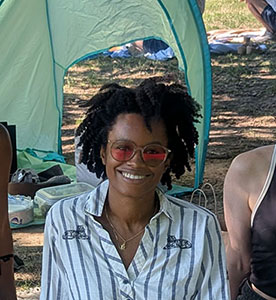
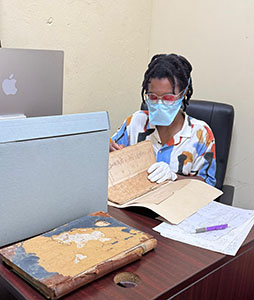

About
Raised in Pennsylvania, I moved to Brooklyn in 2015 after attending NYU's Summer Publishing Institute. After working 9 years in marketing for an academic publisher, I decided to leave the industry and go back to school for my MLIS. Archives and libraries are a big passion of mine and my personal goal is to help lead conservation efforts with the National Archives of St. Kitts and Nevis, where my mom is from.
Education
- Pratt Institute, MLIS, 2027
- Rosemont College, BA, 2011

Hobbies
- Artistic Swimming
- Animated films
- Collecting library cards
- Sweet treats
Fun Facts
- I've never broken a bone
- I don't like chocolate
- I enjoy soup year round

Favorite Spots